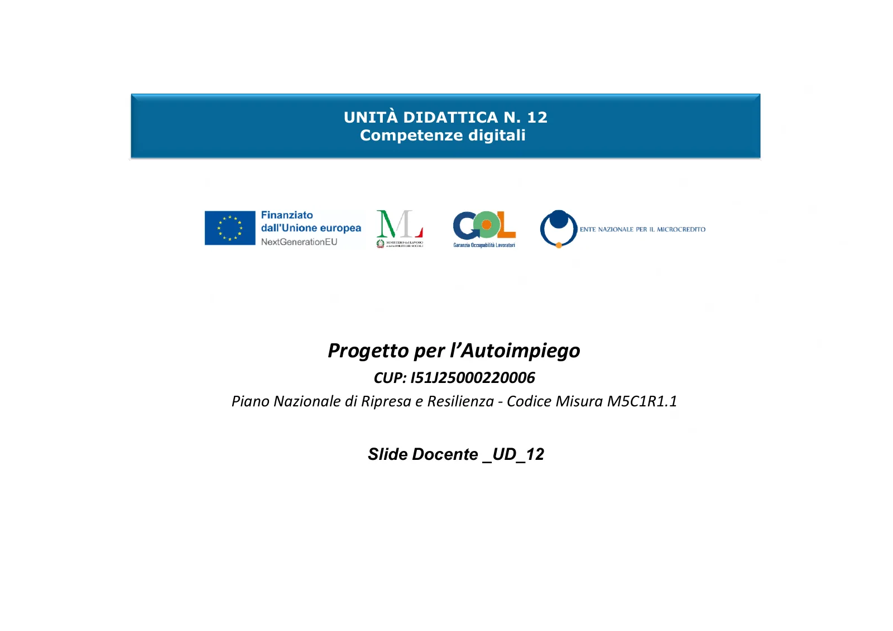
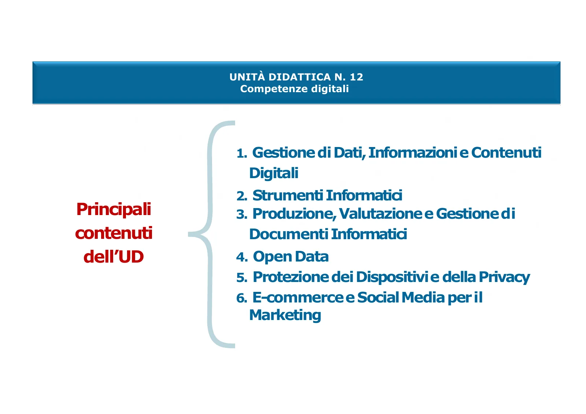
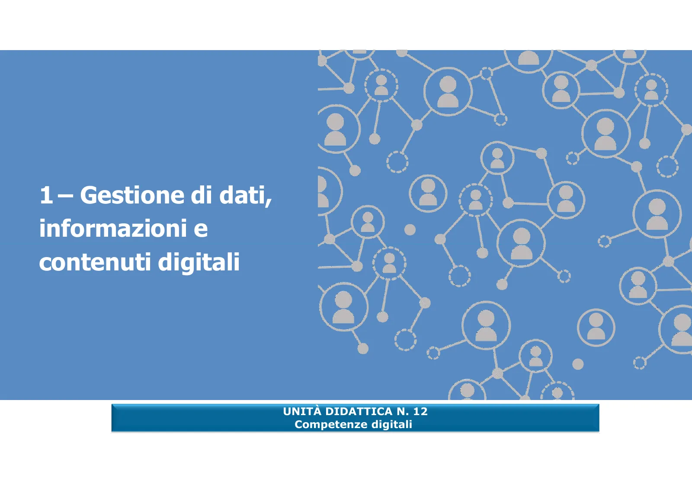
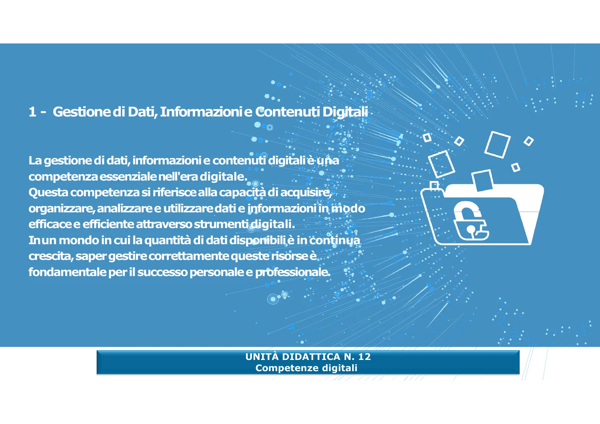
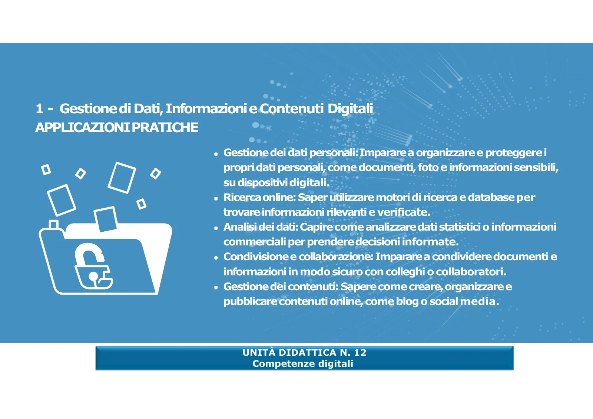

Parte A · mer 11 novembre · prima metà (1h35) · 5 slide originali · 9 integrazioni essenziali + 6 facoltative
Trovare, valutare e usare le informazioni
Gestione di dati, informazioni e contenuti digitali, prima parte: le slide originali 1–5 affiancate da infografiche, simulazioni ed esercizi su ricerca online, valutazione delle fonti, analisi dei dati e condivisione.
Le slide del modulo · le slide originali sono intatte, quelle con l’etichetta colorata sono integrazioni
UD12 · Competenze digitali · Incontro 1 di 4 · mercoledì 11 novembre 2026 · 3 ore online · parte A
Trovare, valutare e usare le informazioni
Che cosa vuol dire gestire dati e contenuti digitali, come si cerca bene online, come si riconosce una fonte affidabile, come si leggono i numeri e come si condivide senza rischi.
Slide originali UD12 · 1–5+ simulazioni ed eserciziDocente: Ing. Antonio Adinolfi
Dove tenete oggi i documenti importanti del vostro progetto?
Telefono, chiavetta, email, cloud, cassetto della scrivania… Scrivete in chat tutti i posti: li riprendiamo nella Parte B.

Corsodi Formazione CompetenzeDigitali ClaudioVerzola EnteNazionaleperilMicrocredito Progetto per l’Autoimpiego CUP: I51J25000220006 Piano Nazionale di Ripresa e Resilienza - Codice Misura M5C1R1.1 Slide Docente _UD_12

Corsodi Formazione CompetenzeDigitali ClaudioVerzola EnteNazionaleperilMicrocredito 1. Gestione di Dati,Informazionie Contenuti Digitali 2. Strumenti Informatici Principali 3. Produzione,Valutazionee Gestione di contenuti Documenti Informatici dell’UD 4. Open Data 5. Protezione dei Dispositivie della Privacy 6. E-commerce e SocialMedia per il Marketing
3Ven 13/11 · 2 oreDocumenti informatici e open data.
4Lun 16/11 · 2 oreSicurezza, privacy, e-commerce e social.
Filo conduttore: tutto ciò che facciamo serve a preparare e presentare la domanda per avviare la vostra attività (Resto al Sud 2.0).

1 – Gestione di dati, informazioni e contenuti digitali

1 - Gestionedi Dati,Informazionie Contenuti Digitali La gestione di dati,informazionie contenuti digitaliè una competenzaessenzialenell'eradigitale. Questa competenzasi riferisceallacapacitàdi acquisire, organizzare,analizzaree utilizzaredati e informazioniin modo efficacee efficiente attraversostrumentidigitali. Inun mondo in cui la quantità di datidisponibiliè in continua crescita,sapergestirecorrettamentequesterisorseè fondamentaleper il successopersonalee professionale.
Dal dato alla decisione
Da dove partite? Le 5 aree del DigComp

1 - Gestionedi Dati,Informazionie Contenuti Digitali APPLICAZIONIPRATICHE Gestionedei dati personali:Impararea organizzare e proteggerei propridati personali,come documenti, foto e informazioni sensibili, su dispositividigitali. Ricercaonline: Saperutilizzare motori di ricerca e database per trovareinformazioni rilevanti e verificate. Analisidei dati:Capire come analizzaredati statistici o informazioni commerciali per prenderedecisioni informate. Condivisionee collaborazione:Impararea condivideredocumenti e informazioni in modo sicuro con colleghi o collaboratori. Gestionedei contenuti: Saperecome creare,organizzare e pubblicarecontenuti online,come blog o social media.
Gestire i dati personali: i vostri dati vivono in quattro posti
📱
Sul dispositivo
Foto, documenti scaricati, note. Se si rompe o si perde, si perdono.
☁️
Nel cloud
Google Drive, OneDrive, iCloud: accessibili ovunque, protetti dalla password dell’account.
👤
Negli account dei servizi
Banca, PEC, social, e-commerce: dati che non controllate direttamente.
🗂️
Su carta
Contratti, ricevute, documenti: vanno scansionati e archiviati.
Ricerca online: usate gli operatori
Questa fonte è affidabile?
Cinque domande da fare a ogni fonte
Analisi dei dati: che cosa dicono queste vendite?
Tre calcoli che userete nel piano d’impresa
In un foglio di calcolo: =(B2-B1)/B1 con formato percentuale; =C2/1,22 per scorporare l’IVA.
Condivisione: chi può vedere e che cosa può fare?
Pubblicare contenuti: di chi sono le immagini?
Laboratorio (40 minuti): tre informazioni verificate sul vostro mercato
1
Cercate
Usate almeno due operatori (virgolette, site:, filetype:) per trovare dati sul vostro settore e sul vostro comune.
2
Valutate
Per ogni fonte rispondete alle cinque domande. Tenete solo quelle affidabili.
3
Annotate
In un documento: dato, fonte, data, link. Servirà per l’idea di business del piano d’impresa.
Esempi: popolazione per età del vostro comune, imprese del vostro settore in provincia, prezzi medi dei concorrenti, eventi locali in cui vendere.
Checkpoint della Parte A
Gestire i dati = acquisire, organizzare, analizzare, utilizzare.
Cercate con gli operatori e valutate ogni fonte con le cinque domande.
Media e mediana: attenzione ai valori anomali.
Condividete con il permesso minimo, alle sole persone necessarie.
Pubblicate solo contenuti di cui avete i diritti.
Con la presentazione selezionata: →spazio avanti · ← indietro · F schermo intero · N note · O indice · L laser · B schermo nero · numero + Invio per saltare. Nelle simulazioni usate mouse o dito: i tasti funzionano di nuovo appena cliccate fuori dai campi.
Note del docente
Scaletta · mer 11 novembre · prima metà (1h35) · lezione online
Come si distribuisce il tempo
0:00Accoglienza online, il percorso in 4 incontri, domanda di apertura in chat
0:15Slide 1–4: dal dato alla decisione
0:30Slide 5 · ricerca online: simulazione degli operatori
0:50Valutare le fonti (esercizio in condivisione schermo)
1:05Analisi dei dati: simulazione delle vendite
1:25Condividere in modo sicuro; checkpoint
1:35Pausa
Verifica formativa · 10 domande · soglia 7/10
Test di fine parte
Le opzioni compaiono in ordine casuale. Con almeno 7 risposte corrette si apre la Parte B.